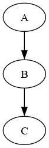
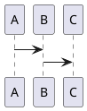
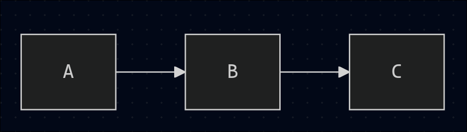
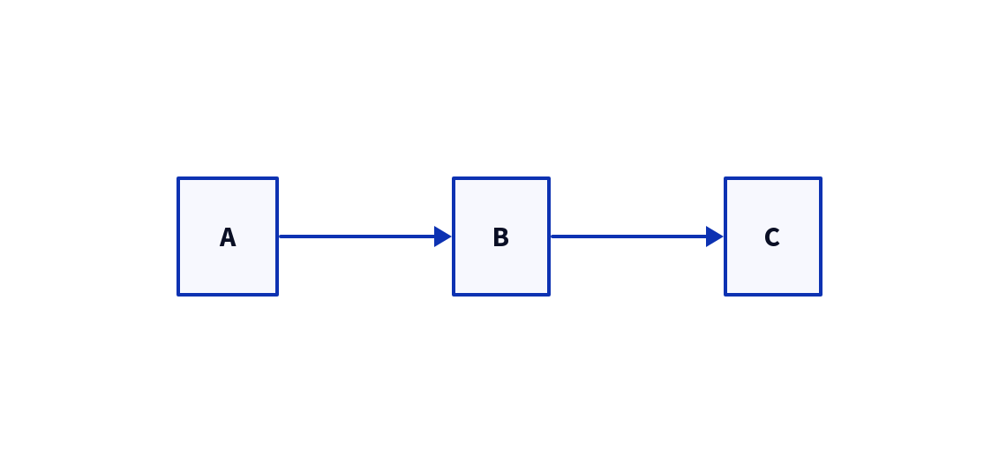
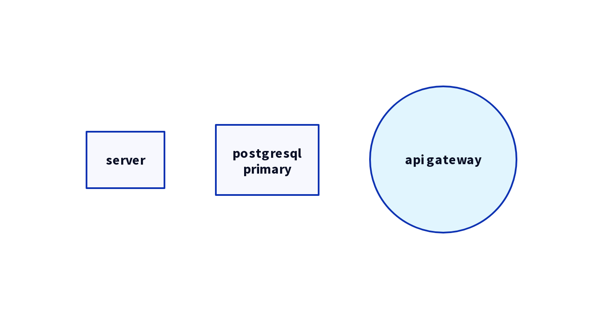
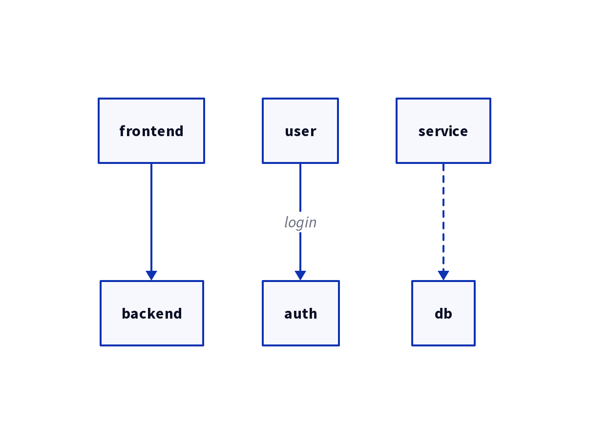
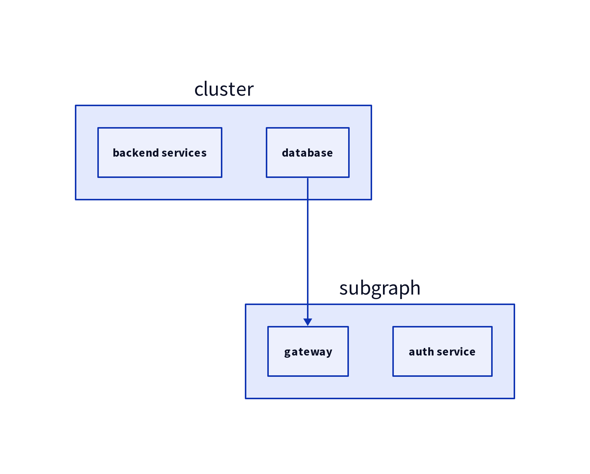

Created: 2025-10-21 Tue 16:39
диаграммы показывают структуру процессов,
код - детали реализации.
d2 создает диаграммы через текстовый код, когда вы документируете
визуальная схема экономит часы объяснений.
digraph g {
a -> b;
b -> c;
}

@startuml
a -> b
b -> c
@enduml

graph lr
a --> b
b --> c

direction: right
a -> b -> c

объект - базовый элемент диаграммы.
# простой объект
server
# с меткой
database: "postgresql\nprimary"
# со стилем
api gateway: {
shape: circle
style.fill: "#e1f5fe"
}

связь определяет отношения между объектами.
# простая связь
frontend -> backend
# с меткой
user -> auth: "login"
# со стилем
service -> db: {style.stroke-dash: 3}

группируют связанные объекты.
cluster: {
backend services
database
}
subgraph: {
gateway
auth service
}
cluster.database -> subgraph.gateway

| аспект | gui-driven | code-driven |
|---|---|---|
| версионирование | бинарные файлы | код |
| история изменений | зависит от реализации | легкий commit history |
| откат изменений | зависит от реализации | git revert |
| аспект | gui-driven | code-driven |
|---|---|---|
| компоненты | копирование-вставка | копирование, наследование |
| стили | ручное применение | темы, wildcard |
| шаблоны | ограничены | библиотеки паттернов |
| аспект | gui-driven | code-driven |
|---|---|---|
| размер холста | зависит от реализации | безграничный |
| авто-лейаут | ручной | автоматический |
| производительность | зависит от реализации | стабильная |
таблицы с полями и связями:
общая карта взаимодействий между отделами компании. разные формы для
цвета показывают тип взаимодействия
один язык для всех типов диаграмм, версионирование изменений,
автоматический лейаут, интеграция с markdown.
нужно изучить синтаксис, меньше контроля над точным позиционированием,
сложнее совместное редактирование.
vs code extension, интеграция с obsidian, cli для ci/cd, растущее
сообщество.